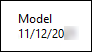
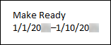
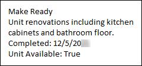

Source: https://rmxhelp.rentmanager.com/Topics/Express/Other/Scripts/Function-Unit-Status-Information.htm
Unit Status Information Function (Script)
This function displays information on the selected unit's Unit Status tile. The function's internal variables must be used to display results.
The class that utilizes this function and the location from where the scripting information is pulled in Rent Manager can be found in the table below.
| Class | Syntax |
|---|---|
|
[Unit().UnitStatusInformation()] Displays information found on the unit's Unit Status tile and the Unit Status Types page. |
Parameters
Parameters change what the function examines and/or how it displays results. The parameters available to this function are indicated below and must be specified in the order listed in the following syntax. Required parameters must be assigned values for the function to work. For Optional parameters, if no value is provided in the script, Rent Manager uses default values.
UnitStatusInformation("AsOfDate")
AsOfDate
Specify the date for which to retrieve the status information. If no date is specified, today's date is used by default.
[UnitStatusInformation("02/01/2026")]
Instructs the function's internal variables to display the selected unit's status information as of February 1, 2026.
Variables
Some function parameters store information in system variables. These variables allow Rent Manager to display information that would typically be pulled through the use of more complex scripts. You can easily recognize system variables because they always have an underscore following a dollar sign "$_ " preceding the variable name.
The following variables are available for the AsOfDate parameter:
| Variable | Description |
|---|---|
|
[$_statuscomment] |
Displays the Comment of the status from the unit's General tile as of the given date. If no comment is specified, no value is returned. |
|
[$_statusdescription] |
Displays the Description of the status from the Unit Status Types page as of the given date. If no status is specified, no value is returned. |
|
[$_statusenddate] |
Displays the End Date of the status from the unit's General tile as of the given date. If no status is specified, this pulls the start date of the next active unit status and returns one day prior. If there is neither a future unit status nor a current unit status as of the given date, no value is returned. |
|
[$_statusname] |
Displays the Name of the status from the Unit Status Types page as of the given date. If no status is specified, <No Status> is returned. |
|
[$_statusshowasavailable] |
Displays True or False corresponding with the Show As Available checkbox on the Unit Status Types page as of the given date. If no status is specified, no value is returned. |
|
[$_statusshowasva |
Displays True or False corresponding with the Show As Vacant checkbox on the Unit Status Types page as of the given date. If no status is specified, no value is returned. |
|
[$_statusstartdate] |
Displays the Start Date of the status from the Unit Status tile of the unit's details page as of the given date. If there is not a status for the given AsOfDate, this variable examines the status active prior to the given date and returns one day after its End Date. If there was no status prior to or during the AsOfDate, no value is returned. |
Script Examples
The following scripts show various ways the function can be used:
[Unit().UnitStatusInformation()]
[$_statusname]
[$_statusstartdate]
Displays the status Name and status Start Date for the selected unit as of today's date in the following format:

[Unit().UnitStatusInformation("01/08/2026")]
[$_statusname]
[$_statusstartdate]–[$_statusenddate]
Displays the status Name, status Start Date, and status End Date for the selected unit as of January 8, 2026, in the following format:

[Unit().UnitStatusInformation("12/01/2026")]
[$_statusname]
[$_statuscomment]
Completed: [$_statusenddate]
Unit Available: [$_statusshowasavailable]
Displays the status Name, status Comment, status End Date, and the status's Show As Available data as of December 1, 2026, in the following format:
